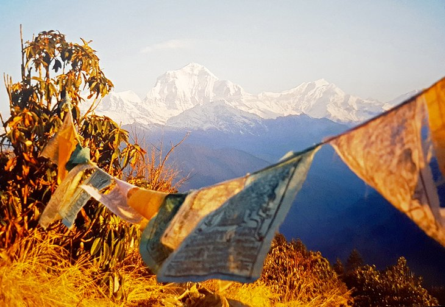
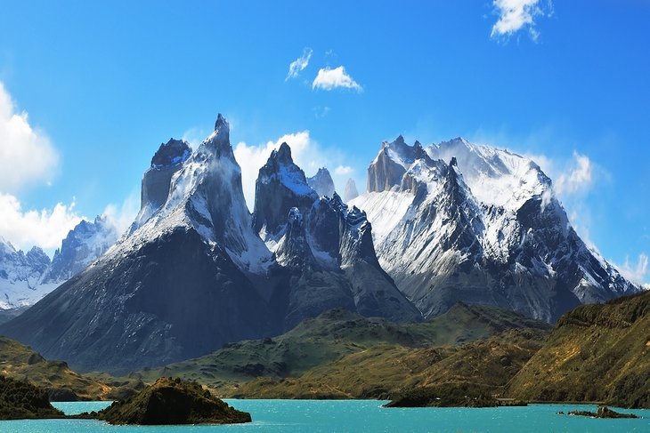

TOP 5 Best Hikes in the World
“The great thing about reaching the top of the mountain is realising that there’s space for more than one person. And you’re now in the prime position to help others up.” – We Dream of Travel

1. Inca Trail, Peru
Descending from the Inca Trail into Machu Pichu at sunrise is one of life's great experiences. Not for the faint of heart, the Inca Trail is a 42-kilometer (26-mile) trek that takes you up over two 13,000-foot passes. The trail follows the route the ancient Incas took over 650 years ago, and much of the original stonework is still in place. Along the way, you'll pass through two tunnels created by the Incas, the ancient ruin of Winay wayna, and many waterfalls.
2. Annapurna Circuit, Nepal
The Annapurna Circuit trail is a 17-day, 205-kilometer, (108-mile) journey through some of the tallest peaks on the planet. The trail starts down in a steamy jungle and ascends well above the tree line.You'll top out at 5,394 meters (17,770 feet) on the Thorung Pass, where the trail is surrounded by a dazzling panorama of mountains, all over 6,096 meters (20,000 feet).

3. Kilimanjaro, Tanzania
Kilimanjaro is one of the most iconic sites in all of Africa, and the hike to the top is on many people's bucket list. In fact, around 30,000 people attempt this hike each year. Depending on the route, your chances of completing the trek are pretty good.The view from the top across the surrounding landscape is spectacular, especially at sunrise when most hikers try to summit. The hike up to the top and back down generally takes about five or six days, depending on your level of fitness and acclimatization rate..

4. Everest Base Camp, Nepal
Up and down are probably the two best words to describe the Everest Base Camp hike (EBC). This 65-kilometer, one-way trail literally climbs a mountain ridge then drops down to a river, then climbs another mountain ridge as it makes its way to base camp.The hike takes 12 to 14 days on average and is high - you will max out at 5,500 meters (18,044 feet). That said, most of the walking is done in the 3,500- to 4,500-meter (11,482 to 4,763 feet) range. The air up here is thin, and any exertion seems twice as hard.
5. W Circuit, Torres Del Paine NP, Chile
Located down at the southernmost region of Chile, the W Circuit in Torres Del Paine National Park, is one of the world's most famous hikes. Easily identifiable by the jagged towers of rock and glacial lakes, this rugged and remote region draws hikers from around the world. Improvements in the trail and services over the past few years have made the trail more accessible - you no longer need to carry your own gear. The hike generally takes between four and six days, and the main season is December to February. Reservations are required for accommodations and camping (free at CONCAF) within the park.
OTHER 5 MOUNTAINS TO HIKE
Enjoy beautiful places in the world